Typhlopidae
The family Typhlopidae (blind snakes) has 279 living species in SnakeList (none venomous), in 18 genera, plus 1 fossil species and 1 recently extinct species listed separately.
- 279living species
- 279non-venomous
- 18genera
- 1fossil
- 1recently extinct
About the family
The largest and most widespread of the blind snake families, found mainly across the tropics. Blind snakes are small, smooth, cylindrical burrowers whose reduced eyes lie under the head scales.[1,2]
They spend almost all their lives underground and eat small invertebrates; the species that have been studied lay eggs. Many are known from only a handful of specimens.[1]
Sources for this introduction
- Scolecophidia. Wikipedia.
- Blindsnakes (Typhlopidae). Grzimek's Animal Life Encyclopedia, via Encyclopedia.com.
Information last reviewed 9 November 2026.
Species
Showing 279 species
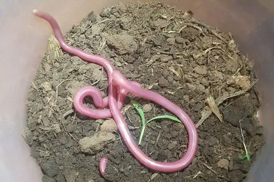
Akagera Gracile Blind SnakeLetheobia akagerae- No photo yetAmsâga Worm SnakeXerotyphlops etheridgei
- No photo yetAndaman Island Worm SnakeArgyrophis oatesii
 Andasibe Blind SnakeMadatyphlops andasibensis
Andasibe Blind SnakeMadatyphlops andasibensis- No photo yetAndy’s Blind SnakeMalayotyphlops andyi
 Angola Blind SnakeAfrotyphlops angolensis
Angola Blind SnakeAfrotyphlops angolensis- No photo yetAnomalous Beaked SnakeAfrotyphlops anomalus
- No photo yetArboreal Blind SnakeRamphotyphlops angusticeps
 Bahaman Slender BlindsnakeCubatyphlops biminiensis
Bahaman Slender BlindsnakeCubatyphlops biminiensis- No photo yetBahoruco BlindsnakeTyphlops eperopeus
- No photo yetBalbalan Blind SnakeAcutotyphlops banaorum
- No photo yetBarahona Worm SnakeTyphlops syntherus
- No photo yetBarrow Island Blind SnakeAnilios longissimus
- No photo yetBasin Worm SnakeAmerotyphlops minuisquamus
- No photo yetBatillus Blind SnakeAnilios batillus
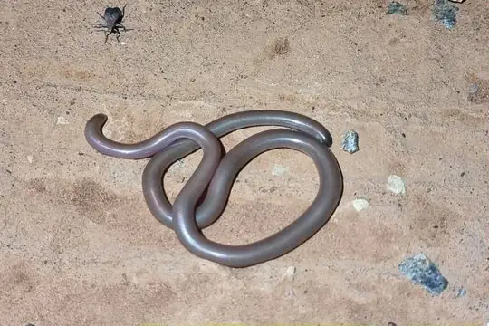
Beaked Blind SnakeAnilios waitii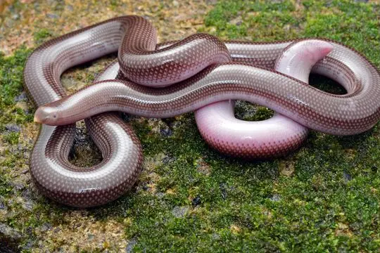
Beaked Worm SnakeGrypotyphlops acutus- No photo yetBeck's Blind SnakeRamphotyphlops becki
- No photo yetBelgaum Worm SnakeIndotyphlops exiguus
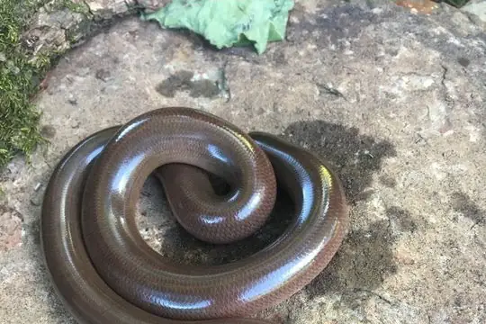
Bibron's Blind SnakeAfrotyphlops bibronii Bicoloured Blind SkinkAfrotyphlops nigrocandidus
Bicoloured Blind SkinkAfrotyphlops nigrocandidus- No photo yetBismarck Sharp-nosed BlindsnakeAcutotyphlops subocularis
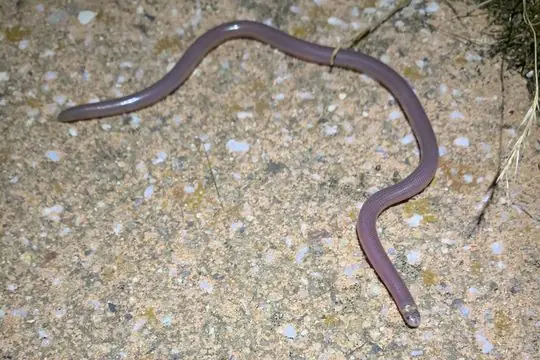
Blackish Blind SnakeAnilios nigrescens- No photo yetBlanford's Blind-snakeAfrotyphlops blanfordii
 Blotched Blind SnakeAfrotyphlops congestus
Blotched Blind SnakeAfrotyphlops congestus- No photo yetBlunt-snouted BlindsnakeAnilios obtusifrons
- No photo yetBoenjoe Island Worm SnakeMalayotyphlops koekkoeki
- No photo yetBoettger's Sand Worm SnakeMadatyphlops boettgeri
- No photo yetBoettger's Worm SnakeMadatyphlops mucronatus
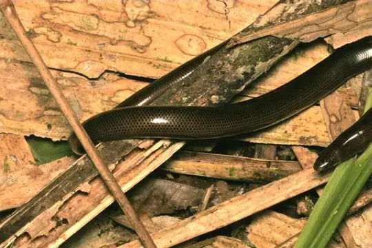
Bougainville Blind SnakeAcutotyphlops solomonis- No photo yetBoyle's Beaked Blind SnakeRhinotyphlops boylei
 Brahminy BlindsnakeIndotyphlops braminus
Brahminy BlindsnakeIndotyphlops braminus Brongersma's Worm SnakeAmerotyphlops brongersmianus
Brongersma's Worm SnakeAmerotyphlops brongersmianus- No photo yetBrown Worm SnakeArgyrophis fuscus
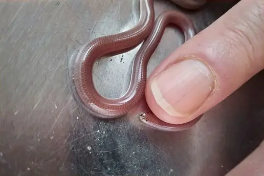
Brown-snouted Blind SnakeAnilios wiedii- No photo yetBuff-snouted Blind SnakeAnilios margaretae
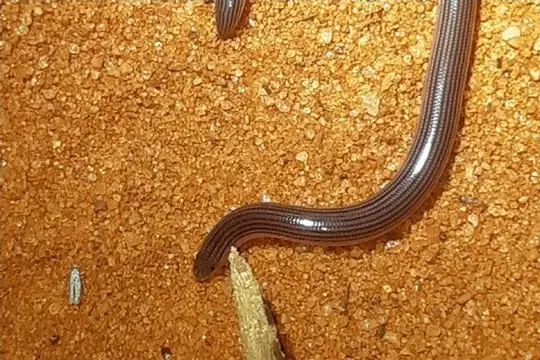
Calabresi's Blind-snakeAfrotyphlops calabresii- No photo yetCameroon Worm SnakeLetheobia decorosus
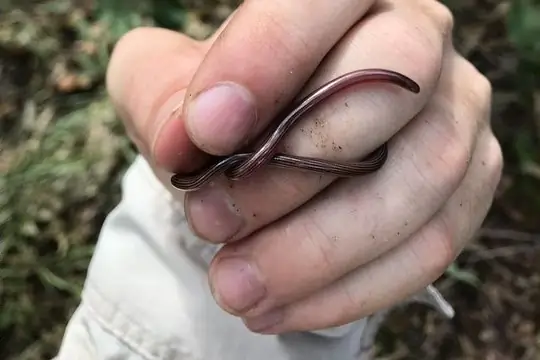
Cape York Striped Blind SnakeAnilios chamodracaena- No photo yetCayman Brac BlindsnakeCubatyphlops epactius
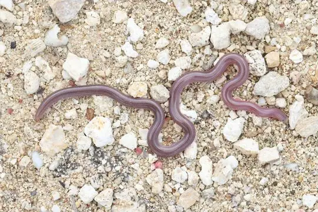
Cayman Worm SnakeCubatyphlops caymanensis- No photo yetCebu Island Worm SnakeMalayotyphlops hypogius
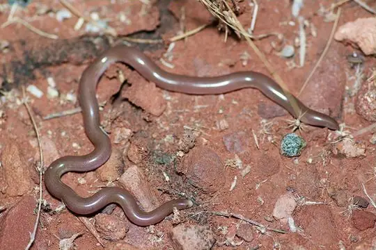
Centralian Blind SnakeAnilios centralis- No photo yetChestnut Worm SnakeIndotyphlops tenebrarum
- No photo yetChristmas Island Blind SnakeRamphotyphlops exocoeti
- No photo yetCienfuegos BlindsnakeCubatyphlops satelles
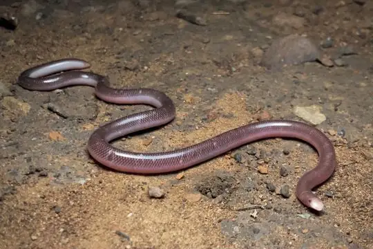
Claw-snouted Blind SnakeAnilios unguirostris Coffee Worm SnakeAmerotyphlops tenuis
Coffee Worm SnakeAmerotyphlops tenuis- No photo yetCollared Worm SnakeMalayotyphlops collaris
- No photo yetComoro Worm SnakeMadatyphlops comorensis
- No photo yetConrad's Worm SnakeRamphotyphlops conradi
 Costa Rica Worm SnakeAmerotyphlops costaricensis
Costa Rica Worm SnakeAmerotyphlops costaricensis- No photo yetCross' Beaked SnakeLetheobia crossii
- No photo yetCuban Giant BlindsnakeCubatyphlops arator
- No photo yetCuban Pallid BlindsnakeCubatyphlops anousius
- No photo yetCuban Short-nosed BlindsnakeCubatyphlops contorhinus
 Cuming's Blind SnakeRamphotyphlops cumingii
Cuming's Blind SnakeRamphotyphlops cumingii- No photo yetDarjeeling Worm SnakeIndotyphlops meszoelyi
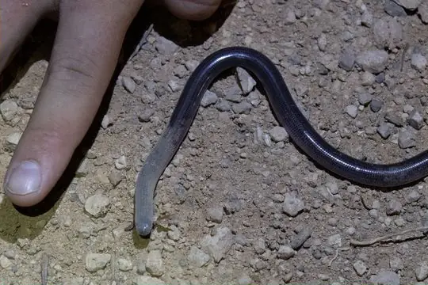
Dark-spined Blind SnakeAnilios bicolor- No photo yetDarwin Blind SnakeAnilios tovelli
 Deharveng's Blind SnakeCyclotyphlops deharvengi
Deharveng's Blind SnakeCyclotyphlops deharvengi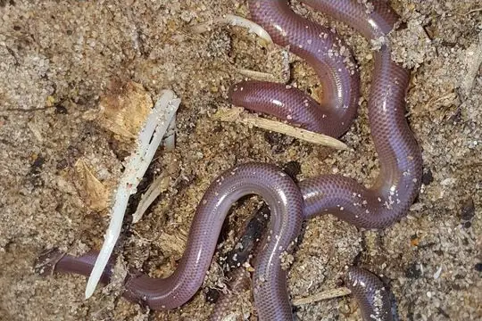
Delalande's Beaked Blind SnakeRhinotyphlops lalandei Diard's BlindsnakeArgyrophis diardii
Diard's BlindsnakeArgyrophis diardii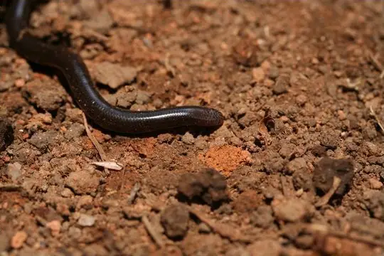
Domergue's Sand Worm SnakeMadatyphlops domerguei Dominican Worm SnakeAntillotyphlops dominicanus
Dominican Worm SnakeAntillotyphlops dominicanus Earthworm Blind SnakeTyphlops lumbricalis
Earthworm Blind SnakeTyphlops lumbricalis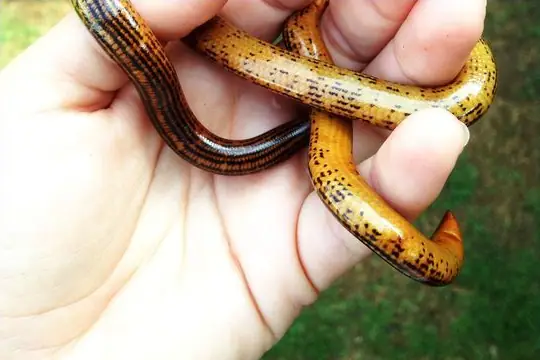
Elegant Worm SnakeAfrotyphlops elegans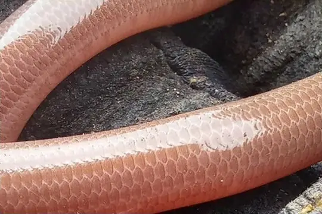
Erica's Worm Snake (catapontus)Antillotyphlops catapontus- No photo yetErica's Worm Snake (naugus)Antillotyphlops naugus
- No photo yetEritrean Blind SnakeLetheobia erythraea
- No photo yetEstado Falcón Worm SnakeAmerotyphlops lehneri
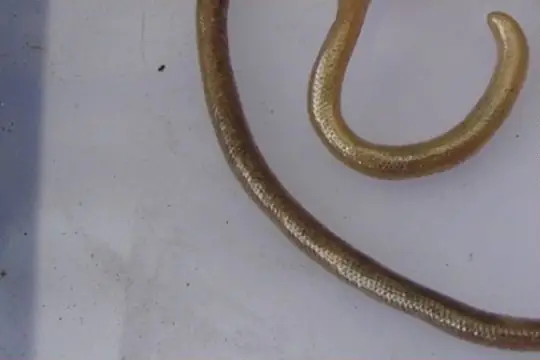
Ethiopian Blind SnakeLetheobia somalica- No photo yetEudeline's Worm SnakeMadatyphlops eudelini
 Eurasian Blind SnakeXerotyphlops vermicularis
Eurasian Blind SnakeXerotyphlops vermicularis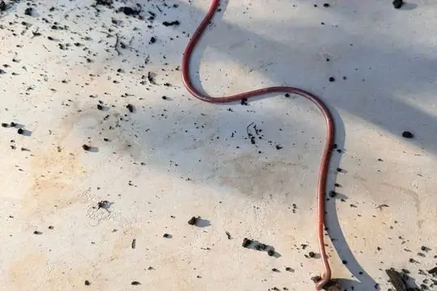
Fannie Bay Blind SnakeAnilios nema- No photo yetFassifern Blind SnakeAnilios insperatus
- No photo yetFeeble Gracile Blind-snakeLetheobia debilis
- No photo yetFile Worm SnakeIndotyphlops filiformis
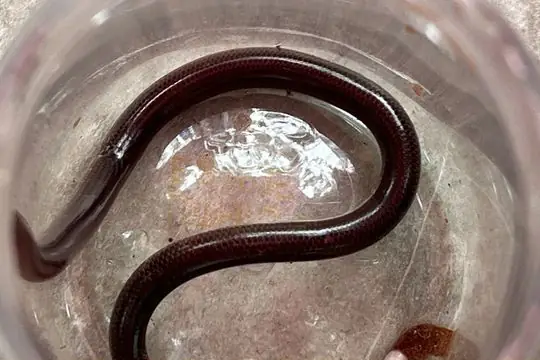
Flathead Worm SnakeAntillotyphlops platycephalus- No photo yetFletcher's Worm SnakeIndotyphlops fletcheri
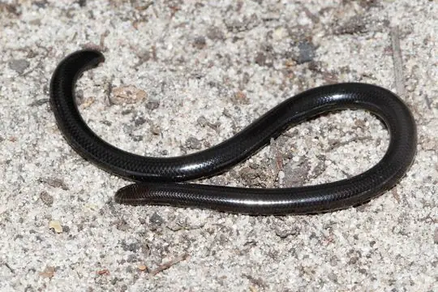
Fornasini's Blind SnakeAfrotyphlops fornasinii- No photo yetGabon Beaked SnakeLetheobia caeca
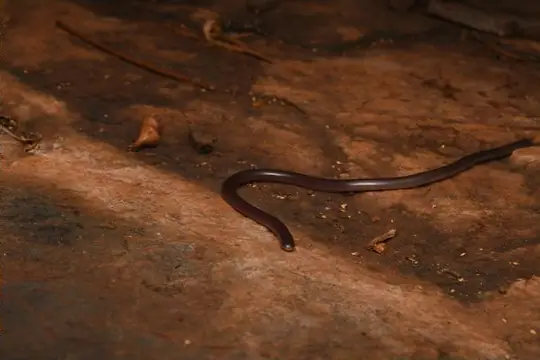
Gane's Blind SnakeAnilios ganei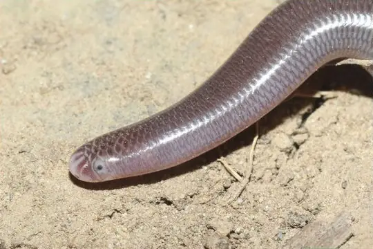
Goliath BlindsnakeCubatyphlops golyathi- No photo yetGonave Island Worm SnakeTyphlops gonavensis
- No photo yetGracile Blind-snakeLetheobia largeni
- No photo yetGrant's Worm SnakeAntillotyphlops granti
- No photo yetGreat Inagua Slender BlindsnakeCubatyphlops paradoxus
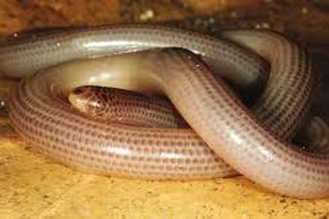
Grenada Worm SnakeAmerotyphlops tasymicris- No photo yetGroote Dwarf Blind SnakeAnilios minimus
- No photo yetGuadeloupe Worm SnakeAntillotyphlops guadeloupensis
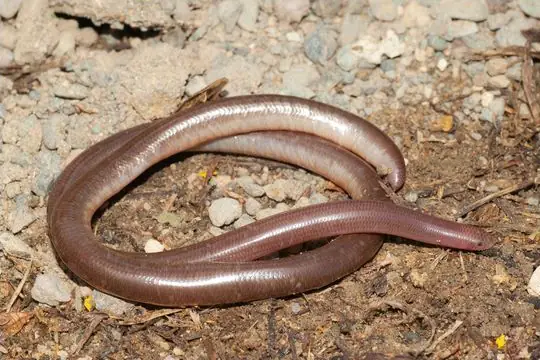
Guantanamo Bay BlindsnakeCubatyphlops perimychus Guinea Blind SnakeAfrotyphlops liberiensis
Guinea Blind SnakeAfrotyphlops liberiensis- No photo yetGunther's Blind SnakeArgyrophis bothriorhynchus
- No photo yetHaitian Worm SnakeTyphlops tetrathyreus
- No photo yetHale River Blind SnakeAnilios fossor
- No photo yetHaut-Oubangui Beaked SnakeLetheobia rufescens
 Hispaniola Worm SnakeTyphlops pusillus
Hispaniola Worm SnakeTyphlops pusillus Honduras Worm SnakeAmerotyphlops tycherus
Honduras Worm SnakeAmerotyphlops tycherus- No photo yetHong Kong Blind SnakeIndotyphlops lazelli
 Hook-nosed BlindsnakeRamphotyphlops multilineatus
Hook-nosed BlindsnakeRamphotyphlops multilineatus- No photo yetImias BlindsnakeCubatyphlops notorachius
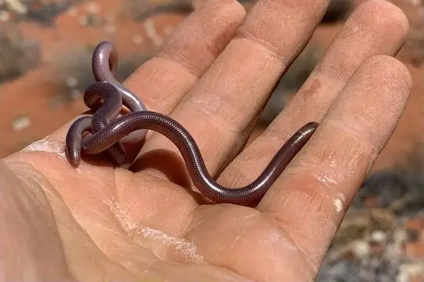
Interior Blind SnakeAnilios endoterus- No photo yetIranian Worm SnakeXerotyphlops wilsoni
 Island Worm SnakeTyphlops sulcatus
Island Worm SnakeTyphlops sulcatus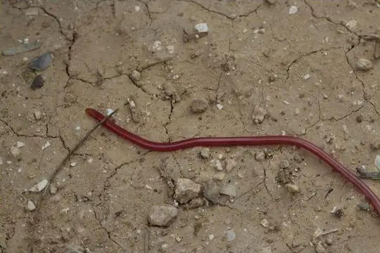
Israeli Worm SnakeLetheobia simoni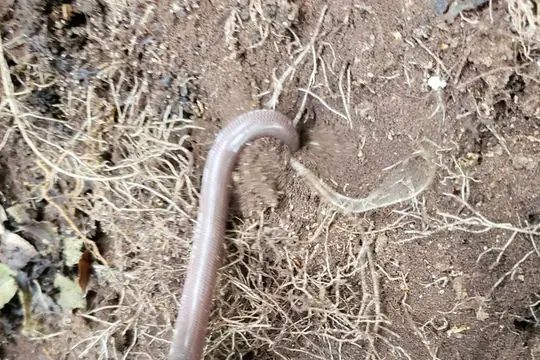
Jamaica Worm SnakeTyphlops jamaicensis- No photo yetJerdon's Worm SnakeIndotyphlops jerdoni
- No photo yetJuba Gracile Blind-snakeLetheobia jubana
- No photo yetKakamega Blind-snakeAfrotyphlops kaimosae
- No photo yetKatanga Beaked SnakeLetheobia kibarae
- No photo yetKei Island Worm SnakeMalayotyphlops kraalii
 Kenya Beaked SnakeRhinotyphlops unitaeniatus
Kenya Beaked SnakeRhinotyphlops unitaeniatus- No photo yetKenyan Dwarf Blind-snakeAfrotyphlops nanus
- No photo yetKimberley Deep-soil Blind SnakeAnilios howi
- No photo yetKimberley Shallow-soil Blind SnakeAnilios kimberleyensis
- No photo yetKlemmer's Blind SnakeArgyrophis klemmeri
- No photo yetKoshun Worm SnakeArgyrophis koshunensis
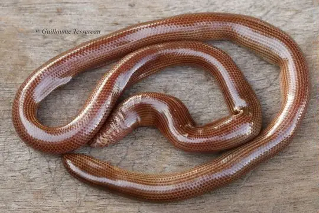
Kunua Blind SnakeAcutotyphlops kunuaensis- No photo yetLa Hotte BlindsnakeTyphlops agoralionis
- No photo yetLa Selle BlindsnakeTyphlops proancylops
- No photo yetLaki Blind SnakeXerotyphlops luristanicus
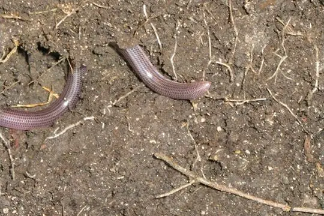
Leeward BlindsnakeAntillotyphlops geotomus Lesser Sunda BlindsnakeSundatyphlops polygrammicus
Lesser Sunda BlindsnakeSundatyphlops polygrammicus- No photo yetLiberia Worm SnakeLetheobia leucosticta
 Lineolate Blind SnakeAfrotyphlops lineolatus
Lineolate Blind SnakeAfrotyphlops lineolatus- No photo yetLiwale Blind-snakeAfrotyphlops tanganicanus
- No photo yetLong Worm SnakeIndotyphlops longissimus
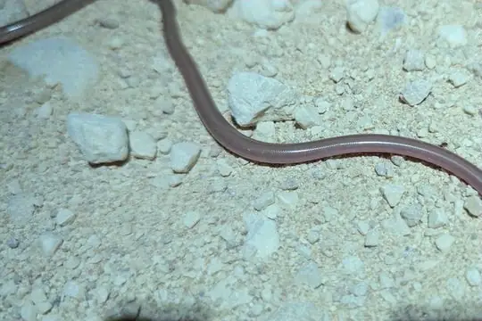
Long-beaked Blind SnakeAnilios grypus Long-nosed Worm SnakeLetheobia episcopus
Long-nosed Worm SnakeLetheobia episcopus- No photo yetLorenz's Blind SnakeRamphotyphlops lorenzi
- No photo yetLoveridge's Worm SnakeIndotyphlops loveridgei
- No photo yetLoyalty Islands Blind SnakeRamphotyphlops willeyi
- No photo yetLuzon Worm SnakeMalayotyphlops luzonensis
- No photo yetLéopoldville Beaked SnakeLetheobia praeocularis
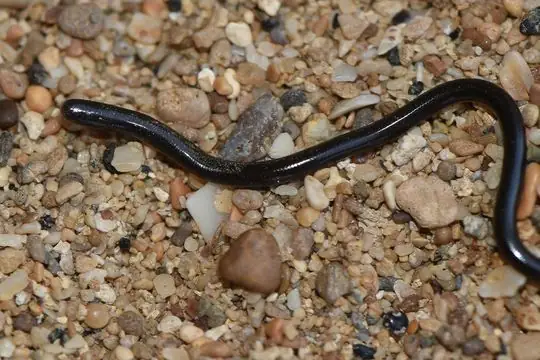
Madagascar Sand Worm SnakeMadatyphlops microcephalus- No photo yetMadagascar Worm SnakeMadatyphlops madagascariensis
- No photo yetMaisi BlindsnakeCubatyphlops anchaurus
- No photo yetMalcolm's Worm SnakeIndotyphlops malcolmi
- No photo yetManila Worm SnakeMalayotyphlops manilae
- No photo yetMann's Worm SnakeLetheobia manni
- No photo yetMann's Worm Snake (angeli)Letheobia angeli
- No photo yetManukwari Blind SnakeRamphotyphlops similis
- No photo yetMarx's Worm SnakeRamphotyphlops marxi
- No photo yetMbeere Gracile Blind SnakeLetheobia mbeerensis
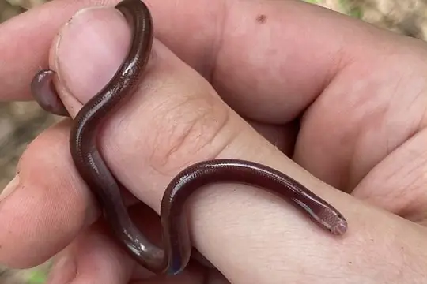
Melanesia BlindsnakeRamphotyphlops depressus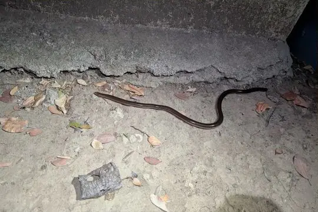
Mocquard's Worm SnakeMadatyphlops decorsei- No photo yetMolly Ozaki's Blind SnakeRamphotyphlops mollyozakiae
- No photo yetMona BlindsnakeAntillotyphlops monensis
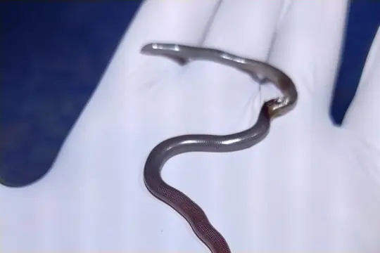
Montserrat Worm SnakeAntillotyphlops monastus- No photo yetMornington Blind SnakeAnilios vagurima
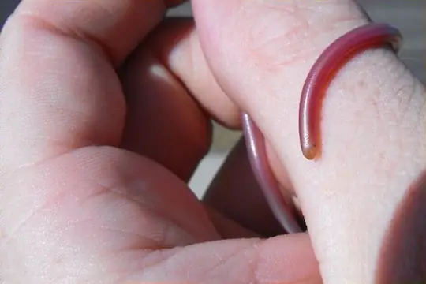
Murchison Blind SnakeAnilios leptosoma Müller's Blind SnakeArgyrophis muelleri
Müller's Blind SnakeArgyrophis muelleri- No photo yetNewton's Beaked SnakeLetheobia newtoni
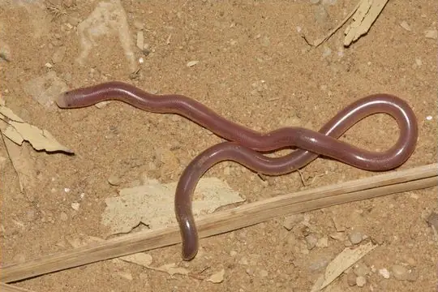
Northern Blind Snake (diversus)Anilios diversus- No photo yetNorthern New Guinea BlindsnakeAnilios erycinus
 Olive Blind SnakeRamphotyphlops olivaceus
Olive Blind SnakeRamphotyphlops olivaceus- No photo yetOriente BlindsnakeTyphlops silus
- No photo yetPalau Island Blind SnakeRamphotyphlops acuticauda
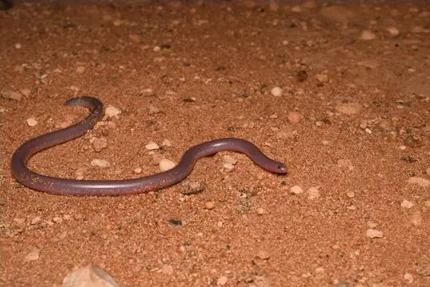
Pale-headed Blind SnakeAnilios hamatus- No photo yetParker's Worm Snake (ocularis)Madatyphlops ocularis
- No photo yetPauwels' Beaked SnakeLetheobia pauwelsi
- No photo yetPemba Gracile Blind-snakeLetheobia pembana
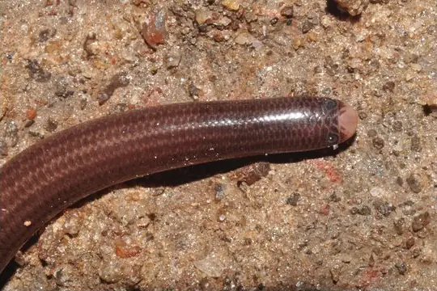
Pernambuco Worm SnakeAmerotyphlops paucisquamus- No photo yetPestel BlindsnakeTyphlops sylleptor
- No photo yetPied Worm SnakeIndotyphlops leucomelas
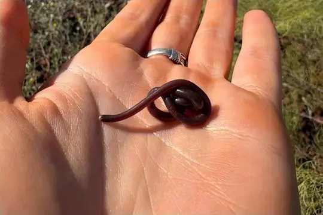
Pilbara Blind SnakeAnilios pilbarensis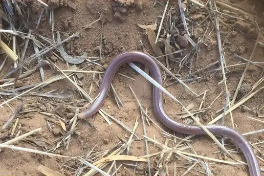
Prong-snouted Blind SnakeAnilios bituberculatus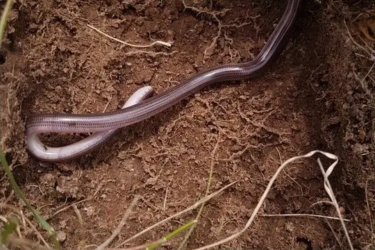
Proximus Blind SnakeAnilios proximus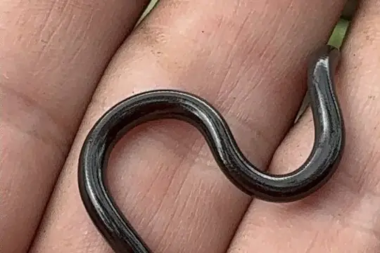
Puerto Rican Coastal BlindsnakeAntillotyphlops hypomethes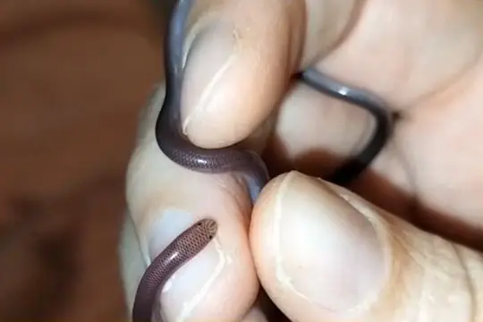
Puerto Rican Worm SnakeTyphlops rostellatus- No photo yetRed Blind SnakeAcutotyphlops infralabialis
- No photo yetRed Worm SnakeMalayotyphlops ruber
- No photo yetRed-headed Worm SnakeMalayotyphlops ruficauda
 Reticulate Worm SnakeAmerotyphlops reticulatus
Reticulate Worm SnakeAmerotyphlops reticulatus- No photo yetReuters Blind SnakeMadatyphlops reuteri
- No photo yetRichard's Worm SnakeAntillotyphlops richardi
- No photo yetRichmond's Worm SnakeTyphlops capitulatus
- No photo yetRoberts' Blind SnakeAnilios robertsi
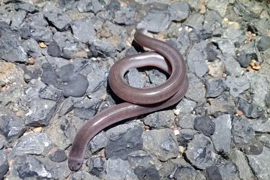
Robust Blind SnakeAnilios ligatus- No photo yetRondo Worm SnakeAfrotyphlops rondoensis
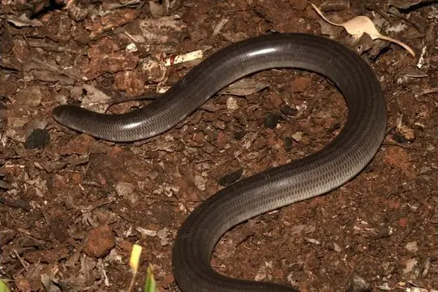
Rotund Blind SnakeAnilios pinguis- No photo yetRound-tailed Blind SnakeAnilios aspina
- No photo yetRoxane's Blind SnakeArgyrophis roxaneae
- No photo yetSaint Barts BlindsnakeAntillotyphlops annae
- No photo yetSalawati BlindsnakeRamphotyphlops supranasalis
- No photo yetSamagutin Worm SnakeIndotyphlops tenuicollis
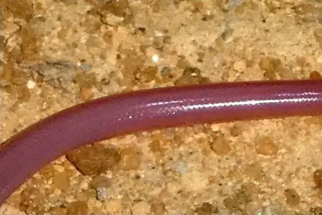
Sand Worm Snake (arenarius)Madatyphlops arenarius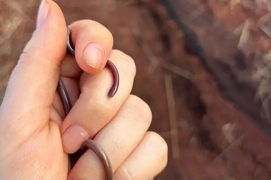
Sand-diving Blind SnakeAnilios ammodytes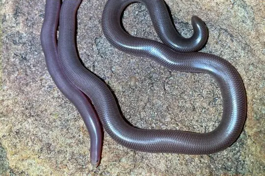
Sandamara Blind SnakeAnilios troglodytes Schinz's Beaked Blind SnakeRhinotyphlops schinzi
Schinz's Beaked Blind SnakeRhinotyphlops schinzi Schlegel's Giant Blind SnakeAfrotyphlops schlegelii
Schlegel's Giant Blind SnakeAfrotyphlops schlegelii Schmidt's Blind-snakeAfrotyphlops schmidti
Schmidt's Blind-snakeAfrotyphlops schmidti- No photo yetSchmutz's Worm SnakeIndotyphlops schmutzi
 Schwartz' Worm SnakeTyphlops schwartzi
Schwartz' Worm SnakeTyphlops schwartzi- No photo yetScortecci's Blind-snakeRhinotyphlops scortecci
- No photo yetSharp-snouted BlindsnakeAnilios systenos
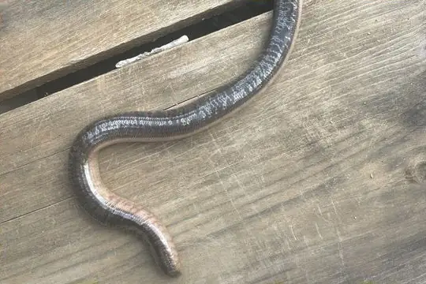
Siamese Blind SnakeArgyrophis siamensis- No photo yetSierra Madre Blind SnakeMalayotyphlops denrorum
- No photo yetSlender Worm SnakeIndotyphlops porrectus
- No photo yetSmall-eyed Blind SnakeAnilios micromma
- Small-headed Blind Snake (affinis)Anilios affinis
- No photo yetSmall-headed Blind Snake (mansuetus)Ramphotyphlops mansuetus
- Socotra Worm SnakeXerotyphlops socotranus
- No photo yetSomali Blind-snakeRhinotyphlops ataeniatus
- No photo yetSomali Giant Blind-snakeAfrotyphlops brevis
- No photo yetSouth India Worm SnakeIndotyphlops pammeces
- Southern Blind Snake (australis)Anilios australis
- Southern Gracile Blind-snakeAfrotyphlops obtusus
- No photo yetSouthern New Guinea BlindsnakeRamphotyphlops bipartitus
- No photo yetSplendid Blind SnakeAnilios splendidus
 Spotted Blind SnakeAfrotyphlops punctatus
Spotted Blind SnakeAfrotyphlops punctatus- No photo yetSri Lanka Worm SnakeIndotyphlops lankaensis
- No photo yetSt. Thomas Beaked SnakeLetheobia feae
- No photo yetStadelman's Worm SnakeAmerotyphlops stadelmani
- No photo yetSteinhaus' Worm SnakeAfrotyphlops steinhausi
- No photo yetStejneger's Beaked SnakeLetheobia stejnegeri
- No photo yetSternfeld's Beaked SnakeLetheobia graueri
- Striate Blind SnakeAnilios broomi
 Striped Blind SnakeRamphotyphlops lineatus
Striped Blind SnakeRamphotyphlops lineatus- No photo yetSudan Beaked SnakeLetheobia sudanensis
- No photo yetSulu Islands Worm SnakeRamphotyphlops suluensis
- No photo yetSumatra Worm SnakeArgyrophis hypsobothrius
 Swahili Gracile Blind-snakeLetheobia swahilica
Swahili Gracile Blind-snakeLetheobia swahilica- Sylvia's Blind SnakeAnilios silvia
- Syrian Blind SnakeXerotyphlops syriacus
- No photo yetTanga Worm SnakeAfrotyphlops platyrhynchus
- No photo yetTaylor's Worm SnakeMalayotyphlops canlaonensis
- No photo yetThomas' Worm SnakeTyphlops hectus
- No photo yetTitan Worm SnakeTyphlops titanops
- Top End Blind SnakeAnilios guentheri
- No photo yetTorit Gracile Blind-snakeLetheobia toritensis
- Torres Strait BlindsnakeAnilios torresianus
- No photo yetTrang Worm SnakeArgyrophis trangensis
- Trinidad Worm SnakeAmerotyphlops trinitatus
- No photo yetUluguru Gracile Blind-snakeLetheobia uluguruensis
 Urungu Beaked SnakeLetheobia gracilis
Urungu Beaked SnakeLetheobia gracilis- No photo yetUsambara Blind-snakeAfrotyphlops usambaricus
- No photo yetUsambara Spotted Worm SnakeAfrotyphlops gierrai
- No photo yetVedda Worm SnakeIndotyphlops veddae
- No photo yetVietnam Worm SnakeArgyrophis giadinhensis
- No photo yetViolet Worm SnakeIndotyphlops violaceus
- No photo yetWedgenose Worm SnakeAfrotyphlops cuneirostris
- No photo yetWeidholz's Pink BlindsnakeLetheobia weidholzi
- No photo yetWest Kimberley BlindsnakeAnilios zonula
- No photo yetWhite-headed Beaked SnakeRhinotyphlops leucocephalus
 White-headed Blind SnakeIndotyphlops albiceps
White-headed Blind SnakeIndotyphlops albiceps- White-tailed BlindsnakeAnilios leucoproctus
- No photo yetWitte's Beaked SnakeLetheobia wittei
- No photo yetWormlike Beaked SnakeLetheobia lumbriciformis
- No photo yetWynn's Worm SnakeMalayotyphlops castanotus
- No photo yetYampi Blind SnakeAnilios yampiensis
 Yellowbellied BlindsnakeRamphotyphlops flaviventer
Yellowbellied BlindsnakeRamphotyphlops flaviventer- No photo yetYirrkala Blind SnakeAnilios yirrikalae
- No photo yetYonenga Worm SnakeAmerotyphlops yonenagae
 Yucatecan Worm SnakeAmerotyphlops microstomus
Yucatecan Worm SnakeAmerotyphlops microstomus- No photo yetZambezi Blind SnakeAfrotyphlops mucruso
- No photo yetZanzibar Beaked SnakeLetheobia pallida
- No photo yetZenker's Worm SnakeLetheobia zenkeri
- No photo yetAfrotyphlops chirioi
- No photo yetAfrotyphlops rouxestevae
- Amerotyphlops amoipira
- Amerotyphlops arenensis
- No photo yetAmerotyphlops caetanoi
- No photo yetAmerotyphlops illusorium
- No photo yetAmerotyphlops martis
- No photo yetAmerotyphlops montanum
- No photo yetArgyrophis giandinhensis
- No photo yetIndotyphlops ahsanai
- No photo yetIndotyphlops madgemintonae
- No photo yetLetheobia acutirostrata
- No photo yetLetheobia coecatus
- No photo yetMadatyphlops albanalis
- Madatyphlops rajeryi
- No photo yetRamphotyphlops adocetus
- No photo yetRamphotyphlops hatmaliyeb
- No photo yetTyphlops leptolepis
- No photo yetTyphlops oxyrhinus
- No photo yetTyphlops pachyrhinus
No snakes in Typhlopidae match.
Fossil species
This species is known only from fossils. It is not a living species and is not counted in this page’s totals. The geological age given is approximate: it comes from the rock layers the fossils were found in, and the dating and classification of fossil snakes are revised as new material is studied.
- Typhlops grivensis (middle Miocene, about 12 million years ago)
Extinct in recent times
This snake is extinct or possibly extinct, last recorded in the wild in historical times, so it is not counted as living.
- Hoffstetter's Worm Snake Madatyphlops cariei (Extinct since the 1600s)
About the family Typhlopidae
- Distribution: living species recorded in 114 countries (+12 territories), on 6 continents: Africa, Asia, Europe, North America, Oceania, South America.
- Genera: Anilios 48, Letheobia 36, Afrotyphlops 28, Indotyphlops 22, Ramphotyphlops 22, Typhlops 20, Amerotyphlops 19, Madatyphlops 14, Argyrophis 13, Antillotyphlops 12, Cubatyphlops 12, Malayotyphlops 12, Rhinotyphlops 7, Xerotyphlops 6, Acutotyphlops 5, Cyclotyphlops 1, Grypotyphlops 1, Sundatyphlops 1.